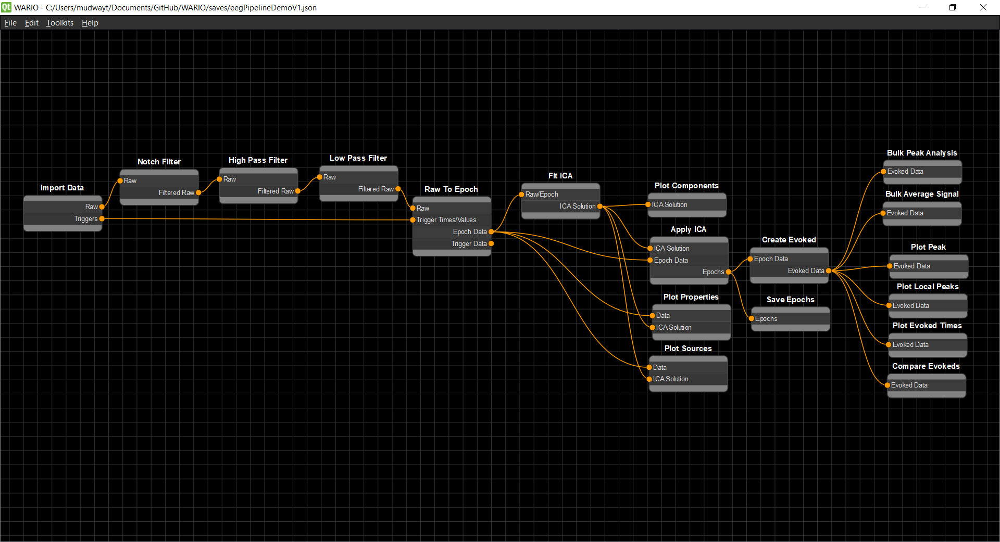

WARIO - Workflow Automation for Research IO
A flowchart based data pipeline development suit with a visual interface based on an expanded version of the Nodz library.
Features
Easy to use flowchart system to create and connect nodes
Allows for the development of fully working python pipelines
Supports batch processing and bulk data analysis
Supports the creation of custom node sets with the built in toolkit system
Fully customizable settings UI for all nodes
Global variable system that can be accessed by all nodes during runtime
Documentation Requirements
These are required to compile the documentation. All can be pip installed.
sphinx
sphinx_rtd_theme
sphinx-markdown-tables
recommonmark
Updating Documentation
The documentation can be re-compiled by running the following command inside the WarioEditordocs folder:
sphinx-build . _build
Any changes pushed to the master branch should be updated on the readthedocs wiki shortly after